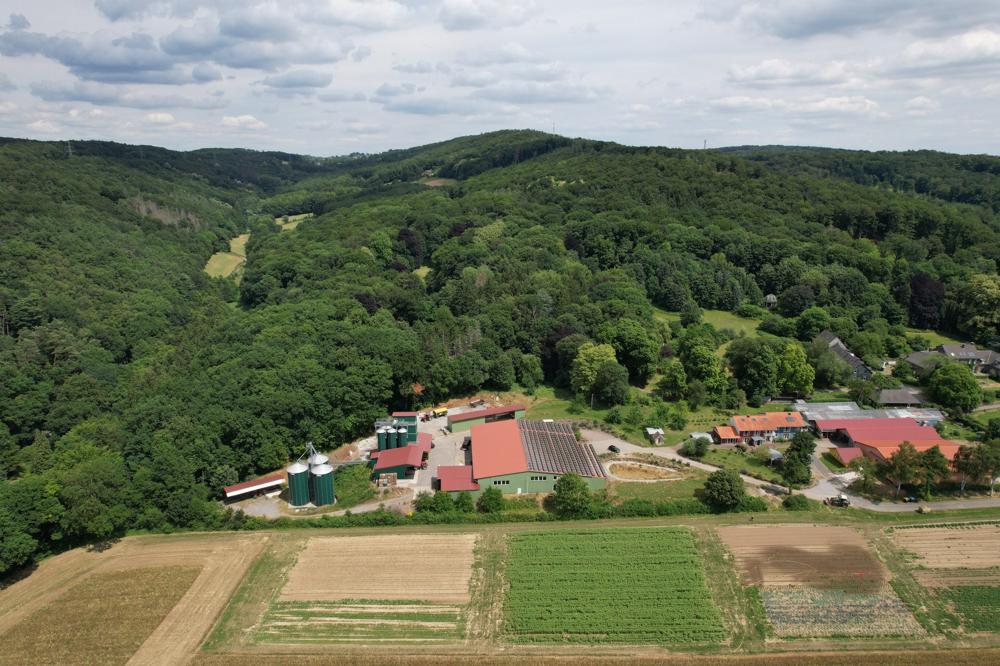
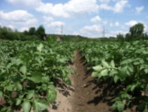

01
Rotklee bindet Stickstoff
Der Klee holt Stickstoff aus der Luft in den Boden. Das ersetzt die Düngung, die ein Bioland-Betrieb nicht zukaufen darf.

Start/Der Hof
Die Kornkammer Haus Holte liegt am Gederfeldweg in Witten. Von hier aus bewirtschaften wir Flächen in Witten, Dortmund und Essen, mitten im Ruhrgebiet, und das seit 1987 nach den Richtlinien des Bioland-Verbandes.

Bioland seit 1987
Dirk Liedmann und sein Partner Bernhard Pawliczek bewirtschaften ihre Felder seit 1987 nach den Richtlinien des Bioland-Verbandes. Diese Form des Landbaus kommt ohne chemisch-synthetische Düngung und ohne Pflanzenschutzmittel aus. Unkraut wird mechanisch reguliert, und eine durchdachte Fruchtfolge hält den Boden fruchtbar.
Als Bioland-Betrieb erfüllen wir einen Standard, der weit über den gesetzlichen Vorgaben der EU-Bio-Verordnung liegt. Bei Bioland gilt der ganze Hof, nicht nur einzelne Flächen.



Fruchtfolge
Die Kornkammer arbeitet mit einer sechsgliedrigen Fruchtfolge. Ihr Kern ist die Gründüngung mit Rotklee.
01
Der Klee holt Stickstoff aus der Luft in den Boden. Das ersetzt die Düngung, die ein Bioland-Betrieb nicht zukaufen darf.
02
Den ersten Aufwuchs liefern wir als Säuberungsschnitt an eine Bio-Biogasanlage. Die Nährstoffe bekommen wir als Gärsubstrat zurück auf die Flächen.

03
Weil der Bestand vor der Samenreife geerntet wird, ist der zweite Aufwuchs so sauber, dass er ohne Probleme als Saatgutvermehrung gedroschen werden kann.

04
Im Anbau 2025/2026: Senf, Hafer, Rotklee, Winterweizen, Dinkel, Kartoffeln und Blaumohn.

Biologische Vielfalt
Sieben Kulturen, und was aus ihnen wird.
01 Senf

Wird in der Senfmanufaktur auf Granitsteinen zu drei Sorten vermahlen und in der Ölmanufaktur zu Senföl gepresst.
Zum Senf02 Hafer

Wird zu Haferkernen und zartblättrigen Haferflocken, in 500 Gramm bis 25 Kilogramm.
Zu Körnern und Flocken03 Rotklee

Das Herzstück der Fruchtfolge: Gründüngung, die Stickstoff bindet. Der erste Schnitt geht an eine Bio-Biogasanlage, der zweite wird Saatgut.
So funktioniert die Fruchtfolge04 Winterweizen

Wird zu Mehl Type 550 und Vollkornmehl in Bäckerqualität. Rund 98 Prozent des Brotweizens gehen an Bäckereien.
Zu den Mehlen05 Dinkel

Wird zu Mehl Type 630, Vollkornmehl, ganzen Körnern und zu hellen und dunklen Dinkelnudeln.
Zu den Nudeln06 Kartoffeln
Wachsen 2025/2026 in Dortmund-Barop und Dortmund-Mengede. Erhältlich als Holter Knolle und Ruhrtalgold, festkochend bis mehlig.
Zu den Kartoffeln07 Blaumohn

Die Sorte Wintermohn wird nativ kaltgepresst. So bleibt der typische Mohngeschmack im Öl.
Zum MohnölGeschichte
Keine erfundene Chronik. Nur die Stationen, die dokumentiert sind.
Dirk Liedmann und Bernhard Pawliczek beginnen, die Felder nach den Richtlinien des Bioland-Verbandes zu bewirtschaften.
Die Kornkammer Haus Holte Handelsgesellschaft oHG steht im Handelsregister beim Amtsgericht Bochum (HRA 6551). Am 20. September 2010 treten Dirk Liedmann und Stefan Pawliczek als persönlich haftende Gesellschafter ein.
Kaltgepresste Öle aus der eigenen Ölmühle kommen ins Sortiment. Im Juni besuchen rund 40 Kundinnen und Kunden der Abokiste 24 den Hof.
Die Fachzeitschrift top agrar porträtiert den Betrieb: Der Anteil selbst verarbeiteter Produkte ist stark gestiegen, neue Absatzwege kommen dazu.
Weitere Daten zur Hofgeschichte ergänzen wir, sobald sie vorliegen.Klimaprojekt
Die Klimawirkung der Landwirtschaft ist nach wie vor nicht abschließend geklärt; vor allem die Milchviehhaltung wurde in einigen Studien kritisch bewertet. Gefragt ist eine Gesamtbetrachtung, die Böden, Futterbau, Tierhaltung und Düngung einbezieht.
Genau das untersucht das Netzwerk Pilotbetriebe, an dem die Kornkammer teilnimmt: die Treibhausgase CO₂, Methan und Lachgas am Beispiel von Pflanzenbau und Milchviehhaltung. Aus den Ergebnissen sollen neue Beratungsinstrumente zum Klimaschutz entstehen.
Das Netzwerk wird vom Thünen-Institut geführt und seit 2008 von der Bundesanstalt für Landwirtschaft und Ernährung im Bundesprogramm Ökologischer Landbau gefördert. Es umfasst ursprünglich 80 ökologische und konventionelle Ackerbau- und Milchviehbetriebe in Deutschland.

Flächen
Der Hof steht in Witten, die Äcker verteilen sich über drei Städte. Wo welche Kultur wächst, sagen wir je Saison.